Learn in simulation
A recurrent PPO teacher uses privileged state information to learn coordinated arm–hand control in clutter.
Dexterous manipulation · Robot learning · Sim-to-real
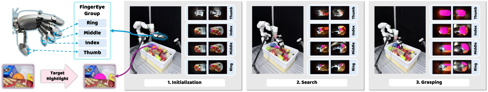
Project video
Our method and real-world experiments, with narration.
The idea
Dexterous grasping in dense clutter requires precise finger and wrist control under severe occlusion, which can hide the target and spatial cues needed for grasping from third-person cameras. We present DexEyeGrasp, a visuomotor learning framework that leverages FingerEye observations to guide both finger and wrist motion. Our framework distills a state-based teacher trained in simulation into a visuomotor student policy that integrates multiple dexterous viewpoints.
To help the policy extract task-relevant spatial information, we introduce self-supervised learning objectives that predict current and action-conditioned future camera–target geometry. These objectives encourage geometric awareness for approaching the target and refining contact-rich interactions despite changing visibility. To further address the visual sim-to-real gap, we learn a residual image encoder from real FingerEye trajectory sequences while keeping the simulation-trained network frozen with the aforementioned objectives. Together, these designs support learning and transferring dexterous grasping in densely cluttered environments.
From simulation to the real world
A privileged teacher, a visual student, and a shared geometric learning objective.
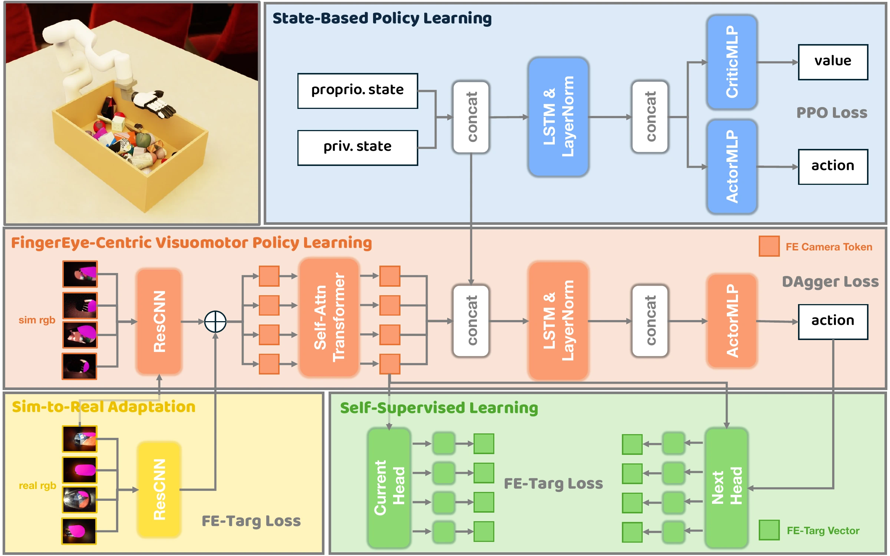
A recurrent PPO teacher uses privileged state information to learn coordinated arm–hand control in clutter.
Online DAgger distills the teacher into a student that combines FingerEye images, attention across views, and proprioception.
FE-Targ objectives predict current and future target geometry, then train a residual visual encoder on real trajectories.
Scene appearance and image augmentations vary during simulation training. Magenta overlays identify the target while preserving the surrounding visual context.
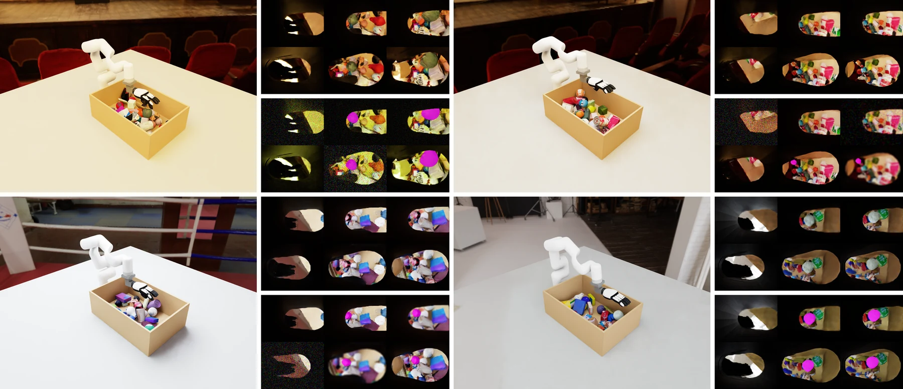
Synchronized scene and raw FingerEye observations. Each clip plays once at its recorded speed.
Experiments
The robot, fingertip cameras, and objects used in our real-world experiments.
An xArm7 arm and XHand use binocular FingerEye cameras on four fingertips. The visual policy combines these moving viewpoints with proprioception to control wrist and finger motion.
A side-view RGB-D camera supports target pose estimation for adaptation data. A residual image encoder learns from approximately 50 real teleoperated trajectories using geometric supervision.
Real-world control runs at approximately 10 Hz with multi-view target tracking.
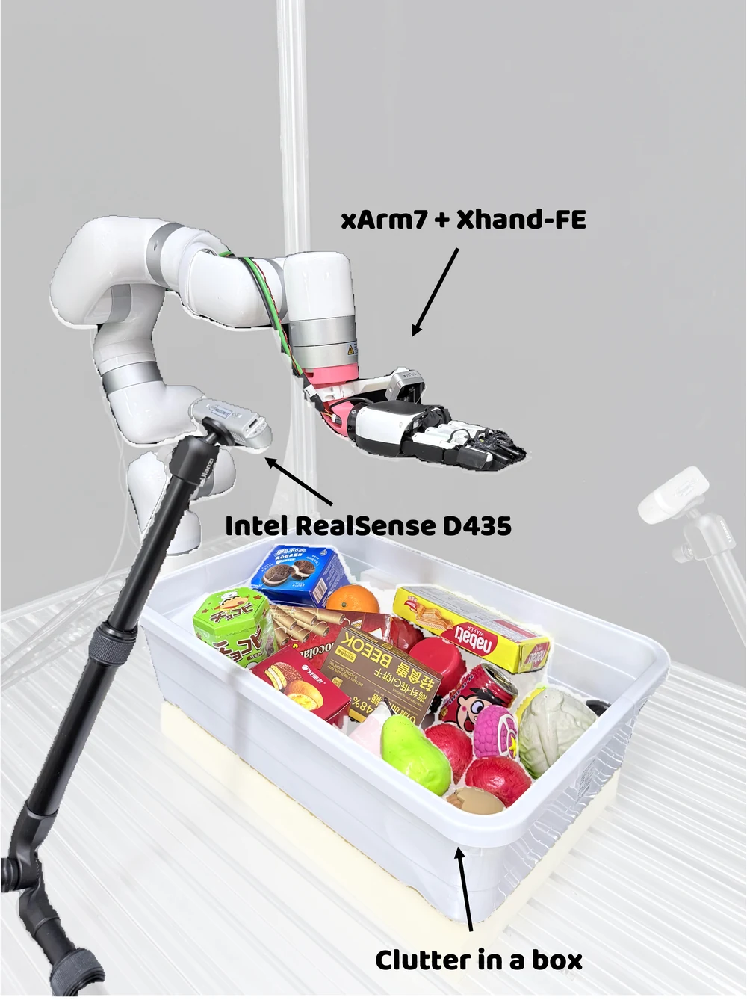
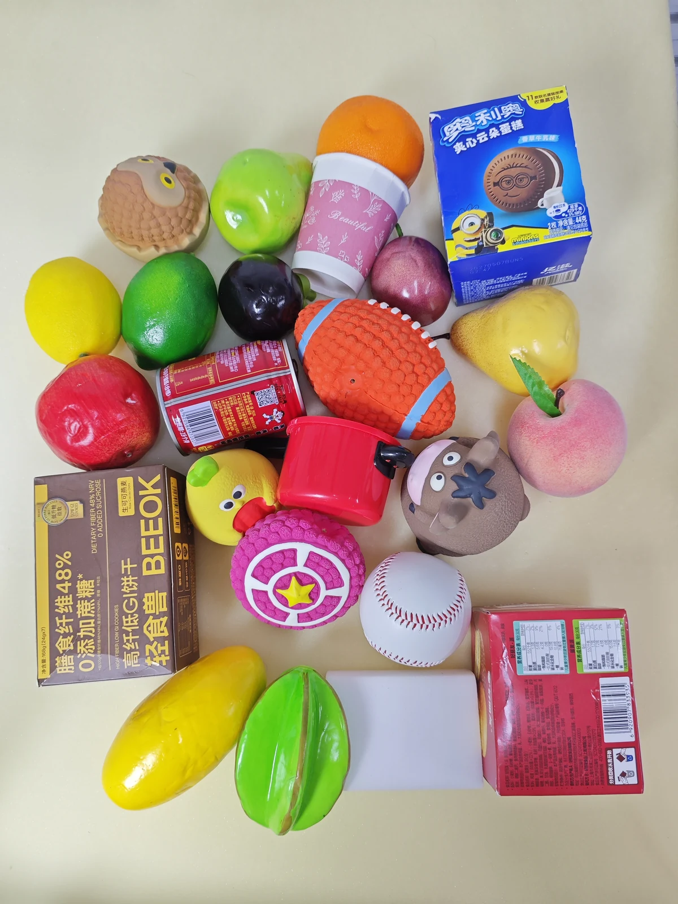
Real-world experiments
Targeted grasping in clutter, with observations from the fingertips.
The same grasp, shown alongside six synchronized fingertip views.
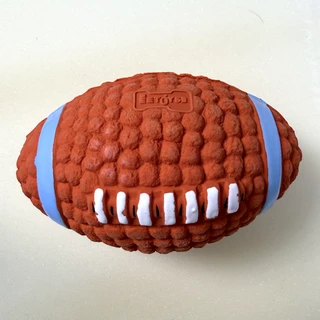
Target objectSix grasping trials. Each target image matches the adjacent video.
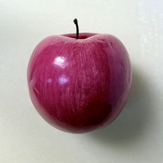
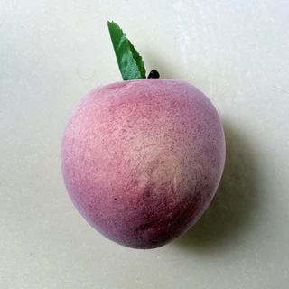
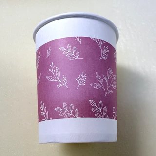
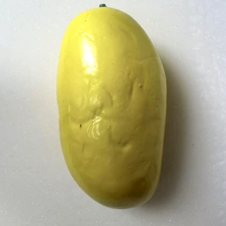
Normal-speed clips. Play individually or start all six together. No automatic replay.
Grasping examples with 15, 30, 40, and 50 objects in the workspace.


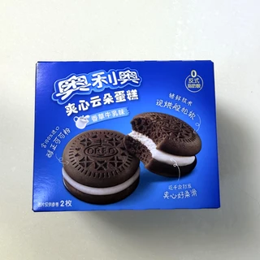
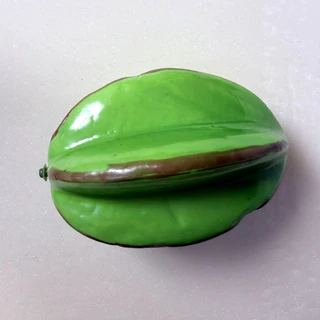
Provisional entry for the current anonymous manuscript.
@misc{dexeyegrasp,
title = {DexEyeGrasp: Learning Dexterous Grasping in Clutter
with FingerEye Observations},
author = {Anonymous Authors},
note = {Manuscript},
url = {https://dexeyegrasp.github.io/}
}